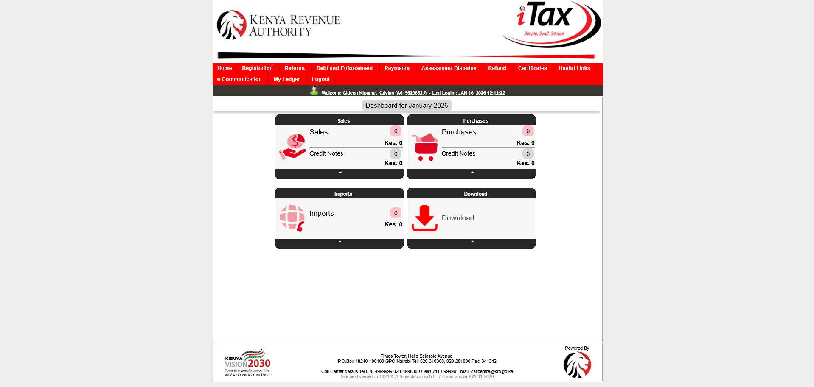
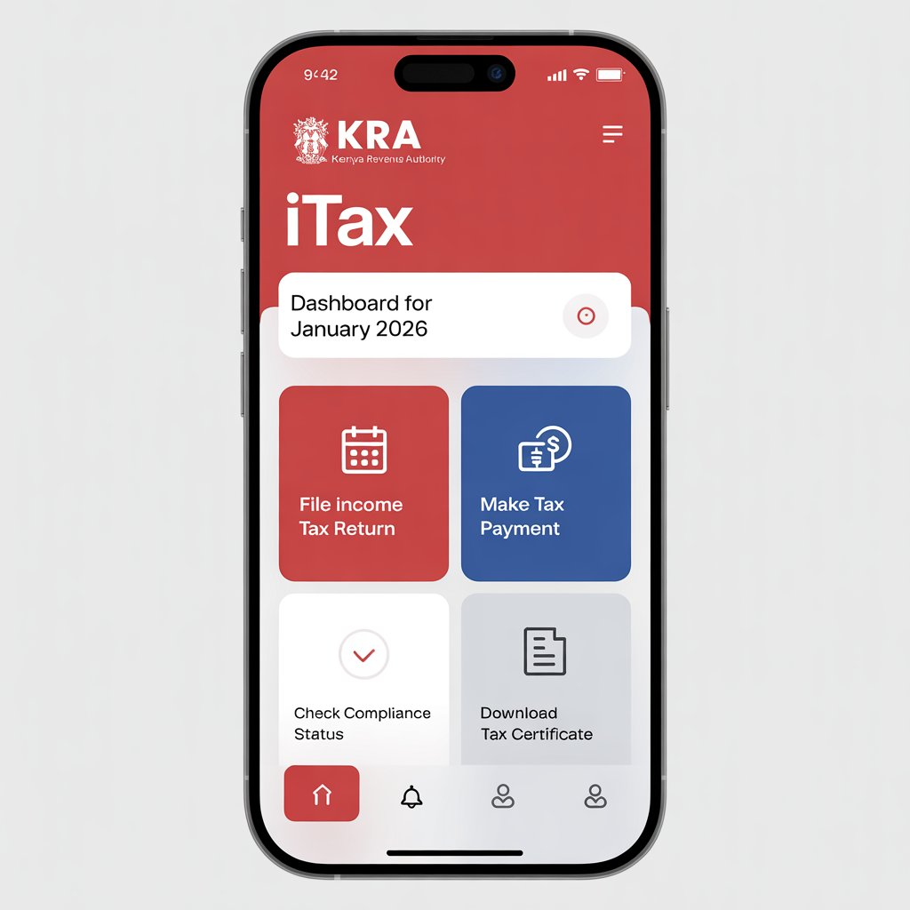
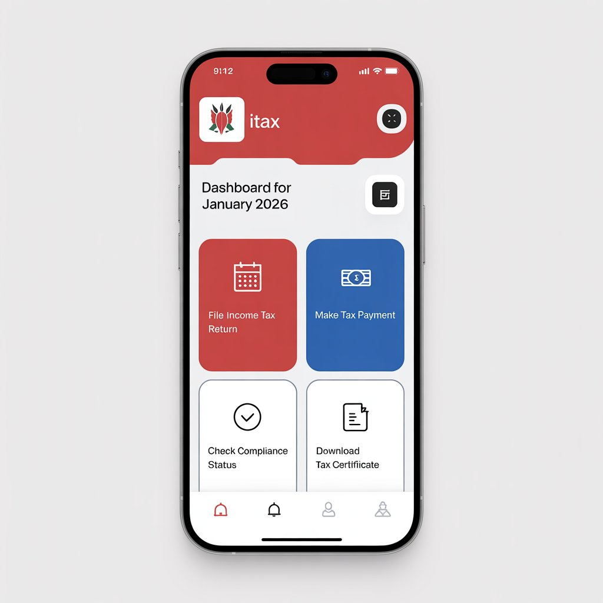
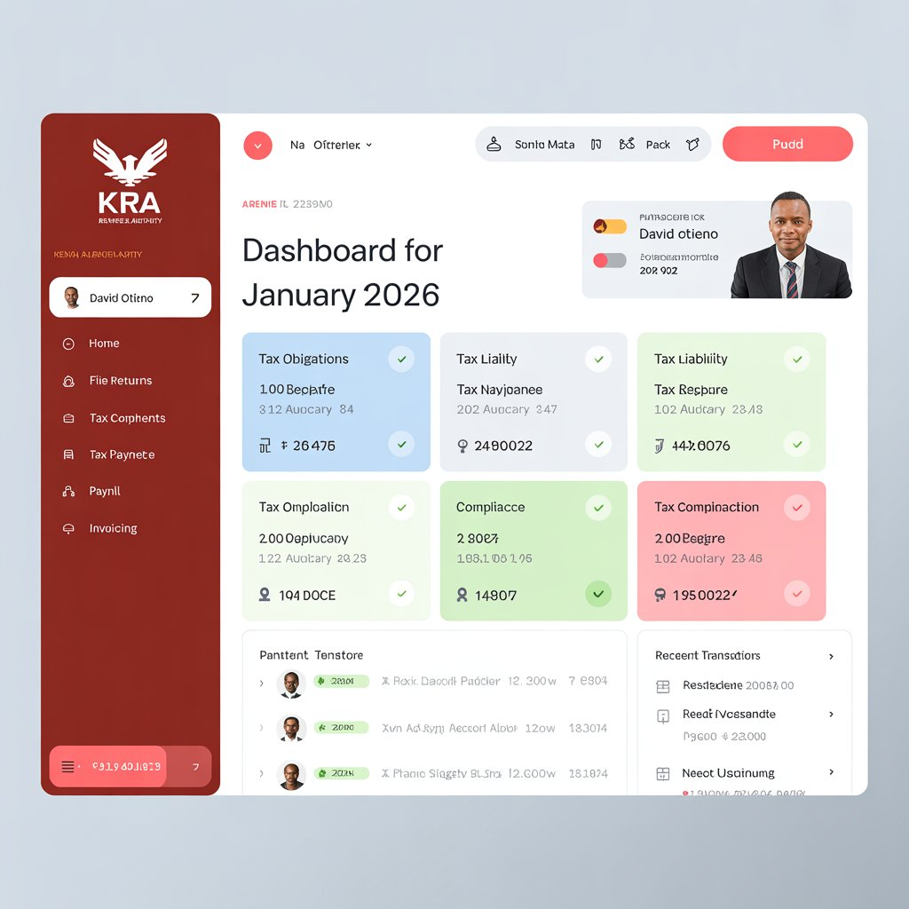
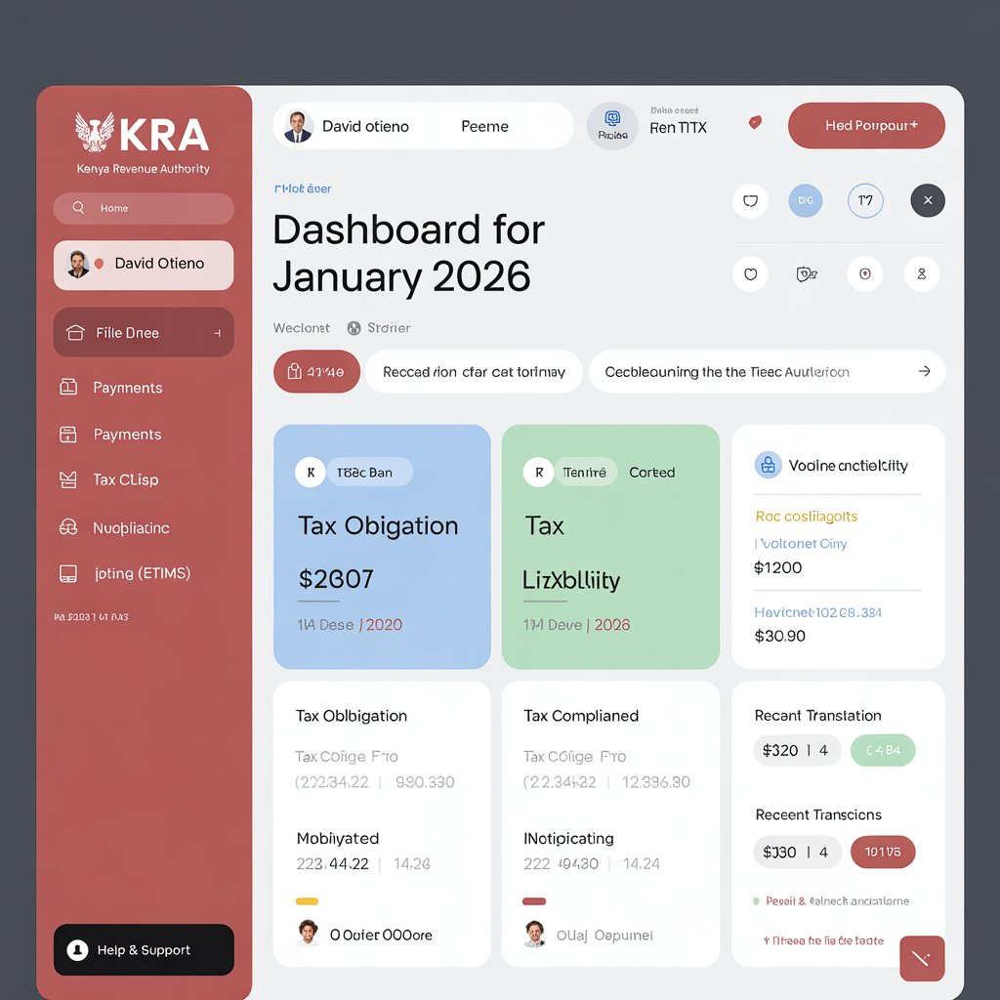
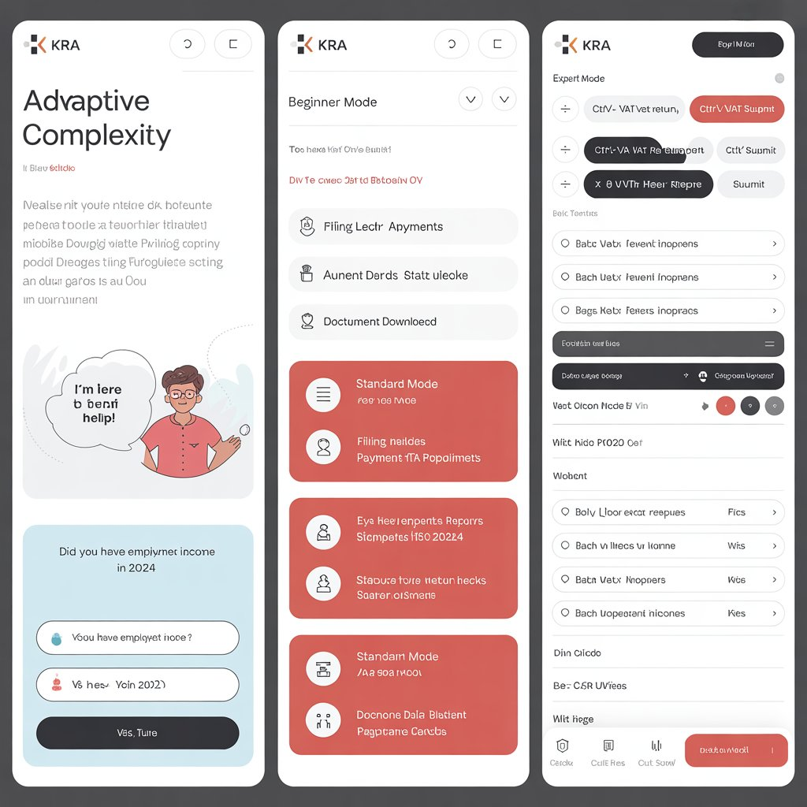
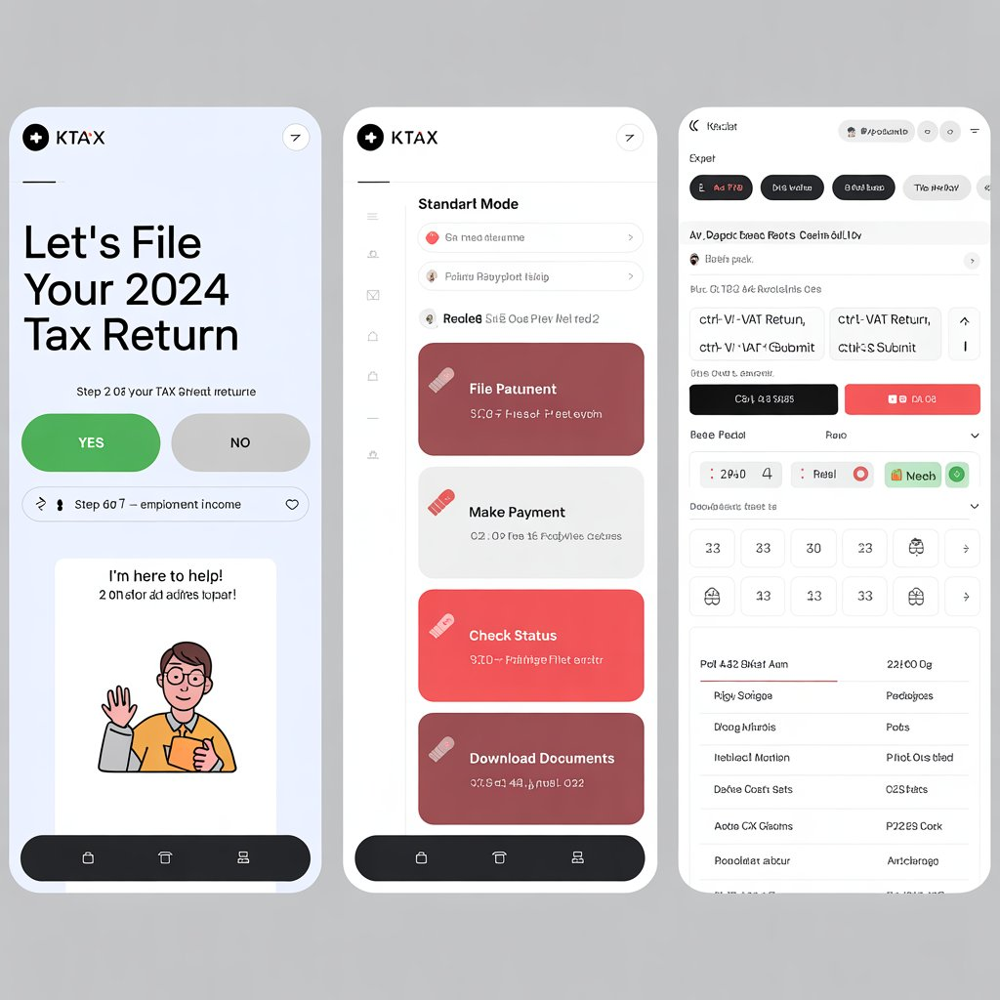
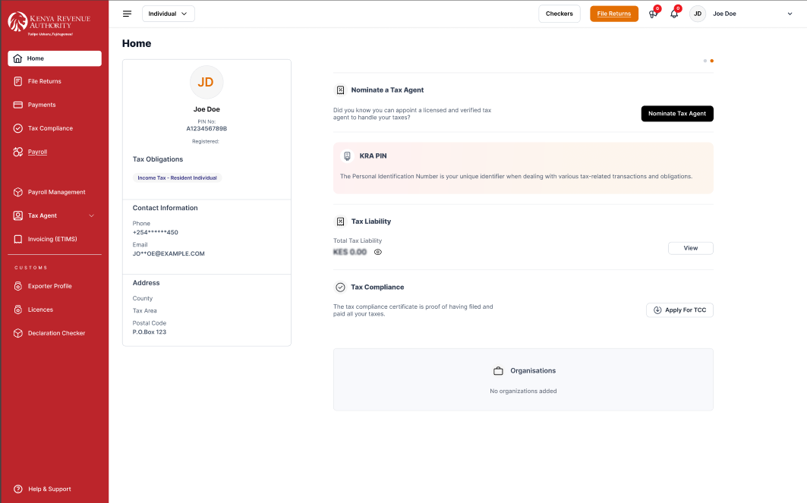

Transforming Tax Filing Experience for 7M+ Kenyan Taxpayers Through Human-Centered Design
The Kenya Revenue Authority's iTax system serves over 7 million taxpayers but suffers from significant usability issues. Our project applies Human-Computer Interaction principles to redesign the system, addressing 6 critical problems that frustrate users daily.
Interface doesn't adapt well to smaller screens. 58% of users access via mobile but system not optimized.
Too much information, poor visual hierarchy. 20+ options on homepage overwhelm users.
No font adjustment, dark mode, or screen reader support. WCAG violations throughout.
Long loading times, timeouts during peak periods. Average 8.4s page load (benchmark: <3s).
Unclear error messages like "Error 500" with no explanation. No progress indicators.
No tutorials or clear instructions. 100% of first-timers need external help.
Comprehensive user research involving 148 participants to understand pain points, user behaviors, and opportunities for improvement in the KRA iTax system.
The KRA iTax system serves over 7 million taxpayers but suffers from significant usability issues that create barriers to effective tax compliance.
Age: 32 | Occupation: Marketing Manager
Filing Frequency: 3-4 times yearly
"I can never find the form I need. Too many options on homepage."
Behavior: Prefers mobile but system forces desktop use
Age: 45 | Occupation: Hardware Store Owner
Filing Frequency: Monthly VAT, weekly PAYE
"System is so slow during month-end. Sometimes times out halfway through."
Behavior: Low tech-savvy, needs simple interface
Age: 38 | Occupation: CPA (50+ clients)
Filing Frequency: Daily (power user)
"No bulk operations. I have to file each return individually."
Behavior: Wants keyboard shortcuts, batch processing
Age: 24 | Occupation: Recent Graduate
Filing Frequency: First time ever
"There's no tutorial or guide. I had to Google everything."
Behavior: High tech-savvy but zero tax knowledge, expects modern UX
Age: 29 | Occupation: Support Agent
Role: Handles user support daily
"We get the same questions daily: how to reset password, where's the form?"
Insight: Sees systemic issues from user complaints

Current iTax System Interface
In-depth interviews with diverse user groups
Found by 4 UX experts evaluation
Analytics review for patterns
NPS Score: -42 (needs improvement)
Task-based testing sessions
Competitive analysis with tax systems
We explored three distinct design approaches, each addressing different user needs and scenarios. User testing informed our final hybrid solution.


Prioritizes mobile users (58% of traffic) with progressive disclosure to reduce cognitive overload. Multi-step wizards break complex forms into manageable chunks.
Opens iTax → Sees 4 main cards → Taps "File Income Tax" → Wizard starts → Question 1: "Were you employed?" → Yes → Question 2: "Rental income?" → Enters data → System auto-calculates → Reviews summary → Submits → Downloads receipt. Time: 12 minutes (vs 45 currently)


Personalized dashboard as central hub with predictive assistance. System proactively guides users based on deadlines and history.
Logs in → Dashboard shows "VAT Return due in 2 days" → Clicks "Quick File VAT" → Form pre-filled from last month → Updates changed values → System validates → Submits → Auto-generates payment slip → One-click M-PESA payment. Time: 8 minutes (vs 60)


Adaptive interface with Beginner/Standard/Expert modes. Users can switch modes based on expertise level.
Switches to Expert mode → Selects first client → Keyboard shortcut "Ctrl+V" → All fields visible → Tab navigation → Pastes from Excel → Ctrl+S to submit → Repeats for 9 more clients → Batch downloads receipts. Time: 50 min total (vs 600 min)
After extensive testing with 90 users across all three alternatives, we chose a HYBRID APPROACH combining the best elements:
Result: Our Figma design balances mobile usability, clear information hierarchy, and intuitive navigation for all user types.
Our high-fidelity Figma prototype incorporates all learnings from user research and testing to create a comprehensive iTax redesign.

Designed for mobile first, scales perfectly to tablet and desktop
Home, File Returns, Payments, Tax Compliance - simplified from 40+ to 8 items
Status cards showing deadlines, quick actions, and compliance status
Complex tasks broken into manageable steps with progress indicators
Real-time feedback and helpful error messages as users type
Full accessibility: screen reader support, keyboard nav, dark mode
Opens app → Dashboard shows "File Income Tax" → Step-by-step wizard → Auto-calculates → Submits → Receipt downloaded
Saved 33 minutesDashboard alert → Pre-filled form → Updates values → Validates → M-PESA payment → Done
Saved 52 minutesGuided wizard → Tooltips explain each field → Real-time validation → Completed without external help
Saved 28 minutes + frustrationMethod: 20 participants complete 5 tasks
Metrics: Completion rate, time, errors, SUS score
Method: 5 UX experts review against Nielsen's 10 heuristics
Focus: Severity ratings, WCAG compliance
Method: 25 users test both old and new systems
Metrics: Time comparison, preference survey
Comprehensive testing with 75+ users demonstrates significant improvements across all key metrics. Our redesign outperforms the current system in every measured category.
"I can't believe how easy that was!"
"Finally! I could do this on my phone."
All improvements statistically significant (p < 0.001)
Font Family: Inter | Weights: 300, 400, 500, 600, 700
A passionate team of HCI specialists, designers, and developers working together to create a better tax filing experience for millions of Kenyan taxpayers.
SCT221-0581/2022
Project Lead & UX Research
Leading overall project direction, user research coordination, and HCI analysis.
SCT221-0440/2022
Visual Design Lead
Creating design systems, UI components, and visual aesthetics in Figma.
SCT221-0263/2021
Interaction Design
Designing user flows, interactions, and prototype animations.
SCT221-0258/2022
Accessibility Specialist
Ensuring WCAG 2.1 compliance and universal design principles.
SCT221-0255/2023
Mobile UX Designer
Optimizing mobile experiences and responsive design patterns.
SCT221-0501/2022
Documentation & Testing
Managing documentation, usability testing, and evaluation analysis.
Our redesign of the KRA iTax system demonstrates the powerful impact of applying Human-Computer Interaction principles to real-world problems. Through thorough user research with 148 participants and iterative design testing, we created a solution that dramatically improves the tax filing experience.
Taxpayers Impacted
Critical Issues Solved
Users Researched